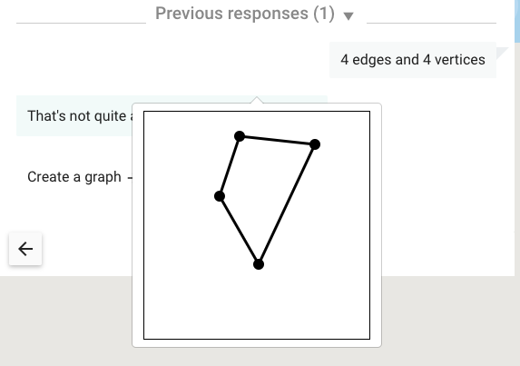

Creating interactions
Table of Contents
Introduction
Interactions provide a way for learners to submit answers to Oppia. They are implemented using custom HTML tags built with Angular Components. Here’s an example of such a tag:
<oppia-interactive-text-input></oppia-interactive-text-input>
Directory structure
In the Oppia codebase, interactions live in the extensions/interactions directory. Each interaction’s foler has the following structure:
A Python configuration file
An empty
__init__.pyfileA
directivesfolder that contains Angular components that make up the interaction. Each component is defined by a triplet of files: a*.htmlfile, a*.tsfile, and a*.spec.tsfile. This folder may also contain*.service.tsfiles that define services, for example a validation service.A
*.tsfile that imports all the components from thedirectivesfolder.A
*.module.tsfile that defines the interaction as a module.
The directives folder
Components
Each interaction needs the following components in its directives folder:
Interaction component: A form the learner will submit when responding to the interaction. For the Multiple Choice Input interaction, this form shows answer options for the user to select.
Response component: Displays the learner’s response to the interaction. For the Multiple Choice Input interaction, this would be the user’s selected answer.
Short response component: Displays a shortened form of the learner’s response. For some interactions, this shortened form is the same as the response component.
Services
Inside the directives folder, each interaction will also have the following services:
Rules service: Rules that allow a user’s response to be evaluated for correctness. For example, the
MultipleChoiceInputRulesServiceprovides anEqualsmethod that checks whether an answer matches a creator-configured correct answer.Validation service: A service that checks a configured interaction for correctness. For example, the validator for the Multiple Choice Input interaction checks that none of the answer choices are empty.
Add a new interaction
To add a new interaction to Oppia, here is what you need to do:
Pick a descriptive id for your interaction, like
MusicPhraseInput. For these instructions, we’ll assume that the id of your interaction isMyInput.In the
extensions/interactionsdirectory, create a new directory calledMyInput. We will be creating our files in this directory.Create a file
MyInput/MyInput.py. In that file, define aMyInputclass that inherits fromextensions.interactions.base.BaseInteraction. This class will define no new methods, but it will override class variables fromBaseInteraction. See the comments inextensions/interactions/base.pyfor details on which variables to override and what they mean. Here are some of the variables to override:The
display_modefield can take one of two values:DISPLAY_MODE_INLINEcorresponds to interactions, like text and multiple choice, that are part of the learner/tutor conversation.DISPLAY_MODE_SUPPLEMENTALcorresponds to interactions that correspond to the tutor bringing a new artifact (like a map, or a programming console) into the conversation.
The
_customization_arg_specsfield should be an array specifying the options that the exploration creator can set. For each option, a dict with the following keys should be provided:name: the name of the customization option. This name should also be used by the component.description: the description shown to an exploration creator in the interaction editor.schema: a schema that defines the customization option’s type, as well as appropriate validators and UI configuration options.default_value: a default initial/fallback value for the customization option.
answer_typeis the type of object that the learner’s answer should be represented as. This should be the name of one of the classes inextensions/objects/models/objects. When the learner submits an answer, the answer will be passed to the server and then through the object’snormalizefunction. You may need to write new objects to support your interaction. This object also determines which rules are available to classify answers submitted using this interaction. For example, if you specify a type ofBoolean, then anIsInclusivelyBetweenrule makes no sense._dependency_idsargument should contain a list of strings, each of which is the name of a dependency. These allow you to specify code that you want to be available to your interaction as it runs or is edited. If the interaction you are implementing has a significant JavaScript component, we suggest packaging as much of the core functionality as possible into third-party JavaScript libraries that are also usable outside of Oppia, and writing a small directive that makes use of the imported JavaScript library. For an example of how to do this, see the PencilCode interaction.
Create an empty
MyInput/__init__.pyfile.Create a
MyInput/staticfolder with any static content you need. For example, this folder should include an icon that represents your interaction.Create a
MyInput/directivesfolder with all of the components and services your interaction needs. These should be named as follows:Interaction component:
my-input-interaction.component.htmloppia-interactive-my-input.component.ts: Defines aInteractiveMyInputComponentclass.oppia-interactive-my-input.component.spec.ts
Response component:
my-input-response.component.htmloppia-response-my-input.component.ts: Defines aResponseMyInputComponentclass.oppia-response-my-input.component.spec.ts
Short response component:
my-input-short-response.component.htmloppia-short-response-my-input.component.ts: Defines aShortResponseMyInputComponentclass.oppia-short-response-my-input.component.spec.ts
Rules service:
my-input-rules.service.tsmy-input-rules.service.spec.ts
Validation service:
my-input-validation.service.tsmy-input-validation.service.spec.ts
Each component should implement
OnInit. Parameters from the Python file are accessible asparameterWithValuewhere the Python variable isparameter. TheWithValueis a legacy hold-over. Note that the parameters in $attrs are JSON-stringified, so you will need to useoppiaHtmlEscaper.escapedJsonToObj()to convert them back. (Do not useJSON.parse(), since it does not handle the necessary escaping.)You might be wondering what the difference is between the response component and the short response component. If you submit an incorrect answer to an interaction, you can click on “Previous responses” to see your incorrect answers. These are shown using the short response component. Then if you click on a previous answer, a pop-up appears with the response component. Here’s an example from the graph input interaction:

The graph is the response component, while the text “4 edges and 4 vertices” is the short response component.
Create a
MyInput/MyInput.tsfile that usesrequire()orimportstatements to import all the*.tsfiles inMyInput/directives. If you have CSS files in yourstatic/folder, import those here too.Create a
MyInput/my-interaction-interactions.module.tsfile that imports the interaction, response, and short response components fromMyInput/directives. It should also import any dependencies and export a module like this:@NgModule({ imports: [ ... dependencies ... ], declarations: [ ... interaction, response, and short response components ... ], entryComponents: [ ... interaction, response, and short response components ... ], exports: [ ... interaction, response, and short response components ... ], }) export class MyInputInteractionModule { }
Activate your interaction in Oppia by editing the
ALLOWED_INTERACTION_CATEGORIESvariable inassets/constants.ts(you’ll need to specify its name). Interactions are classified under different categories; add yours to a suitable category. Your interaction should then be available in the interaction repository, and can be used in explorations.
Testing
We have an end-to-end testing framework using Protractor.js that you you are encouraged to use for your interaction. The tests mimic a user by interacting with the web-page, for example by clicking and typing, and then checking that the interaction behaves in the expected way.
To do so will require the following:
Create a
protractor.jsfile in your interaction’s directory and implement the following:customizeInteraction: a function that when sent relevant arguments will choose parameters for your interaction.expectInteractionDetailsToMatch: a function that in the player verifies the interaction is displayed correctly, including those customizations specified in the editor.submitAnswer: a function that simulates the user submitting an answer to an interaction, for example for a numeric interaction submitting a number.answerObjectType: The type of the returned object of the interaction; this should match theobj_typeof the submission handler specified in the interaction’s python file.testSuite: An array of dictionaries, each of which describes a scenario in which the interaction is used and specifies how it should behave. Each entry specifies customizations for the interaction and selects and parameterizes one of the rules associated with it. The test will then move to the player, check that the interaction is displayed correctly, submit a series of correct and wrong answers, and verify that these are handled correctly.
Add your
protractor.jsfile to the dictionary of interactions inextensions/interactions/protractor.js.Any new objects you create must have handlers for them added to
extensions/objects/protractor.js. You can then use these handlers when writing yourcustomizeInteractionandsubmitAnswerfunctions. Objects that are used as rule parameters must implement asetValue()function that fully specifies them, and this will be used automatically when a rule is being selected. Don’t forget to add the new objects both to the list of object editors and to the exports.Any new rules must be included in
extensions/rules/protractor.jswithin the entry for the type of returned object the rule applies to. You just need to specify thedescriptionfrom the rule’s python file.
When running the tests you may want to change describe to ddescribe in the “Interactions” test class of core/tests/protractor/editorAndPlayer.js which will cause just the interaction-specific tests to be run. Be sure to change it back before committing!